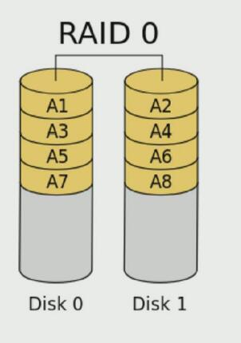
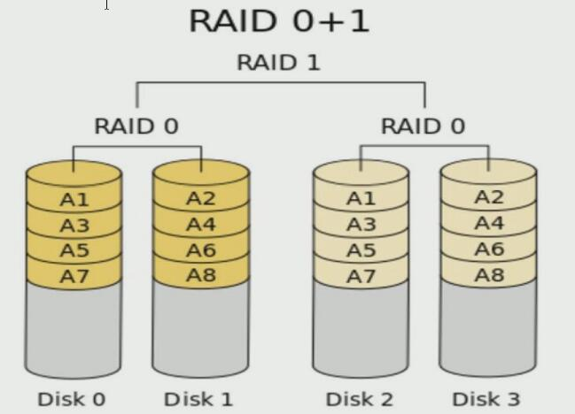
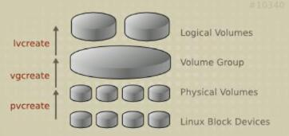
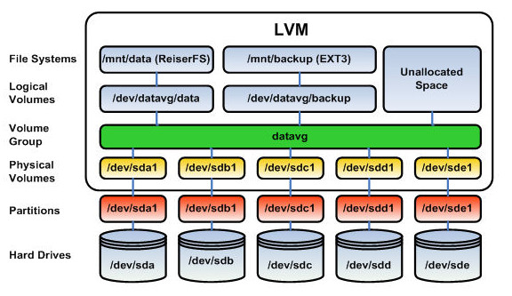

文件系统简介
Linux使用的是索引式文件系统（B+树实现）：文件的属性放置到Inode中，文件的实际数据放在Data Block中。
下面以EXT2文件系统为例，其结构如图所示：

SuperBlock：记录此文件系统的整体信息，包括Inode/Block的总量、使用量、剩余量，以及文件系统的格式与相关信息等。SuperBlock一般为1024字节。
Inode Table：Inode表，每个Inode记录文件的属性，包括文件的权限、拥有者与群组、容量、atime/mtime/ctime和此文件的数据所在的Block地址。
- 每个Inode大小均为固定128字节（ext4和xfs可设定到256字节）。
- 每个文件仅占用一个Inode。
- 系统读取文件时需要先找到Inode，并分析Inode所记录的权限与用户是否符合，符合则再根据Inode记录的Block地址访问数据。
Data Block：实际记录文件的内容，若文件过大一般会占用多个Block。EXT2文件系统所支持的Block大小有1K，2K和4K三种。
| Block大小 | 1KB | 2KB | 4KB |
| :————————: | :—: | :—-: | :—: |
| 最大单一文件限制 | 16GB | 256GB | 2TB |
| 最大文件系统总容量 | 2TB | 8TB | 16TB |- 除非重新格式化，Block的大小与数量在格式化完成后就不能再改变。
- 每个Block内最多只能放置一个文件的数据。
- 若文件大于Block，则一个文件占用多个block；若文件小于Block，则该Blcok的剩余容量就不能再被使用。
dumpe2fs：查询EXT系列SuperBlock信息的指令。文件系统与目录树的关系
目录：当在Linux下的文件系统建立一个目录时，文件系统会分配一个Inode与至少一块Block给该目录，其中Inode记录该目录的相关权限和属性，并记录分配的那块Block地址，而该Block用于记录该目录下的文件名与该文件名占用的Inode号；
ls -i查询当前目录下文件的Inode号码。- 文件：在EXT2建立一个文件时，EXT2会分配一个Inode和对应该文件大小的一个或多个Block。
注：CentOS7之后使用XFS，它是一种日志式文件系统，具备故障恢复能力。其Block大小可从512Bytes - 64KB调整变化，其最大单一文件限制为9EB（1EB = 1024PB = 1024*1024 TB），最大文件系统总容量为18EB。
磁盘简介
硬盘标识：/dev目录下以sd开头的设备文件，例如/dev/sda，/dev/sdb。
同一磁盘的不同分区：以数字区分，例如/dev/sda1，/dev/sda2。
磁盘使用步骤：
- 磁盘分区
- 分区上创建文件系统
- 将分区挂载到目录
分区管理
分区原因
- 隔离系统和程序，可安装多个操作系统。
- 不同分区可以采用不同文件系统。
- 优化I/O性能。
- 实现磁盘空间配额限制
- 提高修复速度
MBR分区
MBR分区不超过2T，一块硬盘最多有4个主分区，也可以3主分区+1扩展分区（扩展分区可包含N个逻辑分区）。MBR分区结构如下图：
GPT分区
GPT支持128个分区，分区可达ZB级别。GPT分区结构如下图：

分区管理命令
常用
- 列出块设备：
lsblk - 查看块设备的UUID（通用唯一识别码）：
blkid
创建分区
创建MBR分区
fdisk命令：
fdisk -l：查看当前分区情况fdisk [device]，管理分区，常用子命令：- p：分区列表
- t：更改分区ID（输入L查询，不同的ID标识分区的类型）
- n：创建新分区
- d：删除分区
v：校验分区
u：转换单位
w：保存退出
q：不保存退出
- fdisk实时更改硬盘的分区，分区完成后注意与内存分区表同步（
partprobe），查看内核是否已经识别新的分区cat /proc/partitions。
创建GPT分区
gdisk命令，用法与fdisk相似。
高级分区操作
parted命令。该命令操作都是实时生效，需谨慎操作。
parted /dev/sdb mklabel gpt：设置/dev/sdb这块磁盘为GPT类型。parted /dev/sdb print：打印/dev/sdb的分区信息。parted /dev/sdb mkpart primary 1 200：设置一个分区，从1MB到200MB，大小为199MB（注意分区需是连续空间）。parted /dev/sdb rm 1：删除第一个分区。parted -l：列出所有硬盘的分区信息。- 重新设置内存中的内核分区表版本：
partprobe.
文件系统管理
查看当前OS支持的文件系统：cat /proc/filesystems
创建文件系统
mkfs -t [type] [device]，例如mkfs -t xfs /dev/sdb2，若要创建swap类型，使用mkswap /dev/xxx命令。
管理文件系统
tune2fs：重新设定ext系列文件系统参数的值-l：查看指定文件系统superblock信息-L 'LABEL'：修改卷标-O：文件系统属性的启用或禁用
dumpe2fs：显示ext文件系统信息，将磁盘块分组管理xfs_info 挂载点：显示已挂载的xfs文件系统信息
文件系统检测和修复
文件系统故障常发生于死机或非正常关机后，注意一定要取消挂载后再执行修复命令。不同文件系统修复命令如下：fsck 、e2fsck、xfs_repair。
常用工具
df：查看文件系统和磁盘空间使用情况，常用选项-T,-h。du -h /xxx/yyy：查看某目录总体空间占用状态，--max-depth=3指定最大目录层级为3dd：用于转换与复制文件。用法：dd if=/x/y of=/a/b bs=# count=#。说明：if=/x/y：从指定文件读取of=/a/b：写入到指定文件ibs=size：一次读size个字节obs=size：一次写size个字节bs=size：block size，指定块大小(既是ibs也是obs)cbs=size：一次转换size个字节skip=blocks：从开头忽略blocks个ibs大小的块，只复制之后的内容seek=blocks：从开头忽略blocks个obs大小的块，用if中复制的内容替换blocks个obs大小的块之后的内容。count=n：复制n个bs备份：
dd if=/dev/sdx of=/dev/sdy：整盘备份到另一磁盘dd if=/dev/sdx of=/xxx/image：整盘备份到文件dd if=/dev/sdx | gzip > /xxx/image.gz：整盘备份并压缩
恢复：
dd if=/xxx/image of=/dev/sdxgzip -dc /xxx/image.gz | dd of=/dev/sdx
挂载设备
挂载点：挂载点一定是目录，该目录为进入该文件系统的入口。
分区挂载
将分区挂载到目录，则该目录下的文件都存储于该分区中；若有其他分区挂载在该目录的子目录下，则子目录下的文件存储于另一分区中。
挂载点下原有文件在分区挂载完成后会被临时隐藏，因此挂载点目录一般为空。
一个分区可以同时挂载在多个目录下，一个目录只能与一个分区关联。
分区实现永久挂载需要写入配置文件/etc/fstab，使用blkid查看分区的UUID（也可使用设备分区名例如/dev/sda2）并按格式写入配置文件；若需要更改挂载点所属文件系统属性（是否启用acl，suid，exec等），亦可在该配置文件中更改，默认为defaults，然后mount -o remount /dev/xxx重新挂载使更改生效。
swap的挂载
写入/etc/fstab，挂载点和文件系统均为swap，保存退出后键入swapon -a；swapoff命令取消交换分区。
示例
mount /dev/sda2 /mnt：将分区sda2挂载在/mnt目录下。-r：只读挂载
-w：读写挂载，默认mount -B 目录1 目录2：类似与软连接的效果，两个目录的文件共享。
-o options：挂载文件系统的选项如下图
umount /mnt：取消挂载cat /etc/mtab：查看目前的挂载情况查看挂载情况：
findmnt 挂载点/设备分区查看正在访问指定挂载点的进程：
lsof 挂载点、fuser -v 挂载点终止所有正在访问指定挂载点的进程：
fuser -km 挂载点
外围设备
光盘
- 手动挂载：
mount /dev/cdrom /mnt - 操作光盘：
eject弹出光盘；eject -t弹入光盘 - 创建ISO文件：
cp /dev/cdrom /root/xxx.iso；mkisofs -r -o ./xxx.iso /etc…
USB
- 查看USB设备是否识别：
lsusb - 被内核探测为SCSI设备：
/dev/sdaX、/dev/sdbX或类似的设备文件 - 手动挂载：
mount /dev/sdbX /mnt
虚拟内存
swap交换分区是系统内存的补充，支持虚拟内存，当没有足够的内存保存系统处理的数据时会将数据写入swap分区。可使用free命令查看内存使用情况。
RAID
RAID：Redundant Arrays of Independent Disks（独立冗余磁盘阵列），其作用有：
- 提高IO能力：磁盘并行读写。
- 提高容错性。
- 多块磁盘组织在一起工作。
RAID的实现方式有：
- 外接式：通过扩展卡提供适配能力。
- 内接式：主板集成RAID控制器，安装OS前在BIOS里配置。
- 软件RAID：软件实现。
RAID级别
RAID-0：同一文件分块存储在多块硬盘上，读写性能提升，无容错能力。

RAID-1：同一文件完全一样地存储于两块磁盘（镜像），读性能提升，写性能略有下降，有容错能力，磁盘利用率只有一半。
RAID-5：读写性能提升，至少3块磁盘，有容错能力（允许最多1块磁盘损坏），每一块磁盘都划分一部分空间充当校验位。
RAID-6：读写性能提升，至少4块磁盘，两个校验位，允许最多2块磁盘损坏，容错性较RAID-5高
RAID-10与RAID-01（实际使用RAID-10，RAID-10容错性较RAID-01好）

RAID-50
RAID-7：自身带操作系统和管理工具，理论上性能最高的RAID模式。
LVM
概述
Logical Volume Manager（逻辑卷管理），允许对卷进行方便操作的抽象层。
将物理块设备指定为物理卷；
用多个物理卷来创建一个卷组（物理卷是用固定大小的物理区域[PE，Physical Extent]来定义的）；
从卷组中划分逻辑卷，可在逻辑卷上创建文件系统，逻辑卷大小可扩展。
LVM示意图


使用逻辑卷步骤
- 将设备指定为物理卷，例如
pvcreate /dev/sdb1 /dev/sdd或pvcreate /dev/sd{b1,d}，同时将分区和磁盘指定为物理卷。（如果是分区，需要将分区ID改为8e，表示Linux LVM类型） - 用多个物理卷创建卷组，
vgcreate [选项] vgName pv1 pv2 ...，例如vgcreate -s 16M vg0 /dev/sdb1 /dev/sdd，选项-s指定PE大小。 - 从卷组中划分逻辑卷，
lvcreate -n mysql -L 8G vg0，-n指定逻辑卷名，-L指定大小，-l也是指定大小但是单位是PE个数。 ll /dev/vg0/mysql发现/dev/vg0/mysql为软链接，指向/dev/dm-0，其另一软链接为/dev/mapper/vg0-mysql，若继续创建逻辑卷，其真实设备名依次为/dev/dm-1、/dev/dm-2…- 在逻辑卷上创建文件系统，
mkfs.xfs /dev/vg0/mysql。 - 挂载，
mount /dev/vg0/mysql /mnt/mysql；将挂载写入配置文件/etc/fstab，在vim扩展命令模式下键入r!blkid /dev/vg0/mysql进行修改。
LVM常用命令
- 列出现有的物理卷：
pvs、pvdisplay - 列出现有卷组：
vgs、vgdisplay - 列出现有逻辑卷：
lvs、lvdisplay 扩展现有逻辑卷：
lvextend -l +48%free /dev/vg0/mysql：剩余卷组的48%分配给逻辑卷，亦可使用PE数进行分配lvextend -l +200 /dev/vg0/mysql；此时使用lsblk或者fdisk -l查看已分配成功，但是df查看并未改变，还需要为新扩展的逻辑卷创建相同的文件系统xfs：
xfs_growfs 挂载点ext：
resize2fs 逻辑卷名（注意xfs与ext的区别）- 亦可一次搞定（加上
-r选项）：lvextend -r -l +xxx /dev/vg0/mysql
- 扩展现有的卷组：
vgextend vg0 PV名 - 删除逻辑卷、卷组、物理卷：迁移数据 ->
umount /mnt/mysql->lvremove /dev/vg0/mysql->vgremove vg0->pvremove /dev/sdb1 /dev/sdd
LVM快照管理
逻辑卷的快照需要与该逻辑卷在同一个卷组，且快照的容量小于等于逻辑卷；
逻辑卷中每一个发生修改的文件都会备份到快照中；
使用快照
lvcreate -n mysql_snapshot -s -L 1G /dev/vg0/mysql：创建逻辑卷mysql的快照，选项-s用于创建快照，快照上的文件系统与原逻辑卷相同。- 挂载快照到目录：
mount -o nouuid /dev/vg0/mysql_snapshot /mnt/snap，由于快照的UUID与原逻辑卷一样，所以挂载时需要指定nouuid选项，不然挂载不上（xfs是这样，ext4不用）。 - 还原快照到逻辑卷（逻辑卷恢复为快照）：
umount /mnt/snap,umount /mnt/mysql：卸载快照和逻辑卷。lvconvert --merge /dev/vg0/mysql_snapshot：还原，此时快照已经删除。mount /dev/vg0/mysql /mnt/mysql：重新挂载。